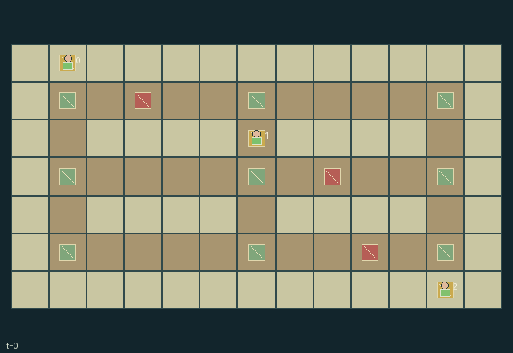

GI200 · Signal Coast League

Deliver two supplies for each polity while scouting, paying finite signal costs, interpreting expiring warnings, and committing caravans to safe-stop road segments.
Identity and original contract
3 independently actionable roles; 12 discrete commands per role; 218 native observation columns per role; original horizon 120 steps. Declared per-step reward range: -3 to 6. Observation regime: partially_observable.
Source SHA-256: 348335cfbe5980113409bb238f167fb25015f31ade5c416654ec07539e360db1
The objective, rewards, population, map and horizon remain original. A preview is not a success claim.
Objective and gameplay
Deliver two supplies for each polity while scouting, paying finite signal costs, interpreting expiring warnings, and committing caravans to safe-stop road segments.
Tending a tower spends shared finite fuel to give peers a dated, finite-lived hazard snapshot. Their later segment commitments encounter actual moving hazards and shared road occupancy; a blocked caravan can lose cargo while waiting, while alternative lanes cost extra scout/driver time.
- Walk the scout on land; issue caravan commands only from within one cell of your stopped caravan.
- A commitment selects the next protected stop: five road cells east/west or two north/south. The caravan then moves automatically one cell per tick.
- Caravans cannot swap or enter another caravan's old cell. Road congestion may delay an already committed trip.
- At a fueled watchtower, transmit one currently seen hazard's position, direction and timestamp to all roles.
- Messages last six later raw calls; their marker stays at the reported position while the actual hazard moves.
- Hazards advance every third tick and bounce between x=2 and x=10. Cargo outside a protected stop is lost within one cell of a hazard.
- Load only at your home and unload only at your assigned destination. Bank, carried, delivered and lost supplies are conserved.
- Warnings cost fuel and a scout action. Detours, waiting at safe stops, scouting and committing early are distinct choices.
Ending: Success when all three delivery counts reach two. Failure when any polity's bank plus caravan cargo plus already delivered supplies falls below two, making its required delivery impossible.
What this game explores
Information, sensing & communication: Who knows a fact, when it was measured, and whether it was communicated are separate state variables. Test memory or communication using only the same role-visible evidence.
Commitment, exchange & governance: Promises consume time, liquidity, access or material. Separate an announced agreement from a binding commitment and from its eventual delivery; log cancellation and expiry too.
Joint transport & shared access: Positions, load geometry, occupancy and persistent access constrain whose action can succeed next. Distinguish physical handoff, shared controls and simultaneous force from a cosmetic cooperation label.
Survival, protection & rescue: Protection and repair alter another role's future feasible actions. Record losses, exposure, rescue and infrastructure as well as delivery; survival is determined by the actual kernel.
These are questions supported by rule structure, not observed learning effects.
Play it: operating walkthrough
crucibles play --game gi200Keep Python running and open its printed address. Select this game, set a seed and press Create session. The game itself is always English.
Assign a role range to Host with Assign / take over, or Assign all roles. Invite a second participant with Create player invitation, then assign a disjoint subset. Every original role is available.
For every owned role choose a legal command and press Queue. Arrow keys / WASD queue a declared directional action for the current role camera when available. Space or Advance one joint step advances everyone together. Non-directional games use the selectors.
Unqueued roles use the labelled untrained uniform-legal policy. Take over or release roles before the next step without resetting. Full-state debug is privileged and permanently logged; role cameras preserve permissions. Close the session to retain logs. Server restart does not restore sessions.
Complete command reference
IDs and English labels exactly match the manifest. Availability depends on role, resources, location and phase. An available action can still have no productive effect.
0·Wait
1·Scout north
2·Scout east
3·Scout south
4·Scout west
5·Tend current tower: send lowest-index currently visible hazard snapshot
6·Beside own stopped caravan: commit east to next protected stop
7·Beside own stopped caravan: commit west to next protected stop
8·Beside own stopped caravan: commit north to next protected stop
9·Beside own stopped caravan: commit south to next protected stop
10·Beside own caravan at home: load available supplies
11·Beside own caravan at destination: deliver needed cargo
Roles and capability identifiers
These original role names describe capabilities, not interchangeable skins. Check each owned role's legal selector before planning handoffs.
agent_0·Western scout and caravan owner 0
agent_1·Central scout and caravan owner 1
agent_2·Eastern scout and caravan owner 2
Information and observation permissions
Partially observable. Static map, safe stops, destinations, towers/fuel, delivery totals, signal flags and phase are public. Scouts have radii 3,3,4. A role also sees hazards within one of its own caravan and always knows its own caravan/home; other scouts, caravans and homes require scout sight. Invisible fields are -1 with explicit masks. Warning entities show only their recipient's stored snapshot, direction, timestamp and remaining lifetime. A live warning never reveals the actual hazard's current state; actual hazard entity visibility remains local. Per-role blocked/loss flags are private observation fields and are not public scene events.
The GIF is full-state debug and may reveal hidden entities or private state. Train on obs[agent], not the picture, state tree or another role's private row. Field slices and visibility are in the original manifest.
Reinforcement-learning integration
import jax
from crucibles_jaxmarl import make
env = make("gi200")
key = jax.random.PRNGKey(0)
key, rk, ak, sk = jax.random.split(key, 4)
obs, state = jax.jit(env.reset)(rk)
actions = env.sample_actions(ak, state)
obs, state, rewards, dones, info = jax.jit(env.step_env)(sk, state, actions)
done = dones["__all__"]Observations are float32 vectors of width 218; actions are scalar int32; masks have 12 entries. Supply all 3 roles each transition. Masked sampling is an engineering reference, not a trained learner.
step_env retains terminal data without reset. step performs outer autoreset and keeps terminal data in info["raw_state"] and info["raw_observation"]. Use dones["__all__"] for episode boundaries; separate completion, failure and time limit in analysis.
JIT or vmap equal identities and shapes. Split independent reset, policy and transition keys. Group different shapes explicitly; do not shrink the population or horizon. Host rendering stays outside training.
Training questions and fair evaluation
Define valid completion from the objective before fitting. Preserve original rewards and also report real deliveries/services, losses, resource state, unresolved episodes and per-role returns. Animation is not a reward signal.
Who knows a fact, when it was measured, and whether it was communicated are separate state variables. Test memory or communication using only the same role-visible evidence.
Promises consume time, liquidity, access or material. Separate an announced agreement from a binding commitment and from its eventual delivery; log cancellation and expiry too.
Positions, load geometry, occupancy and persistent access constrain whose action can succeed next. Distinguish physical handoff, shared controls and simultaneous force from a cosmetic cooperation label.
Protection and repair alter another role's future feasible actions. Record losses, exposure, rescue and infrastructure as well as delivery; survival is determined by the actual kernel.
Compare memory, communication or centralized critics under matched actor information. Declare critic access; keep actor inputs role-filtered. Match partner/opponent distributions, masks, compute and checkpoint selection. Final tests never enter fitting or selection.
Independent training runs or source-pairing blocks are inferential units; episodes from one policy are not independent training replications. Save hashes, keys, versions, device, time and cost. Negative, zero, failed and indeterminate outcomes are valid. No trained checkpoint or target score is supplied.
Classification and evidence
Overlapping editorial labels are reading aids, not proof of novelty, difficulty, strategic equivalence or learning effects.
- Information, sensing & communication
- Evidence
manifest.task.objective: Deliver two supplies for each polity while scouting, paying finite signal costs, interpreting expiring warnings, and committing caravans to safe-stop road segments.
- Evidence
scene.rules.4: Messages last six later raw calls; their marker stays at the reported position while the actual hazard moves.
- Commitment, exchange & governance
- Evidence
manifest.task.objective: Deliver two supplies for each polity while scouting, paying finite signal costs, interpreting expiring warnings, and committing caravans to safe-stop road segments.
- Evidence
manifest.actions.6: Beside own stopped caravan: commit east to next protected stop
- Evidence
manifest.actions.7: Beside own stopped caravan: commit west to next protected stop
- Joint transport & shared access
- Evidence
manifest.task.objective: Deliver two supplies for each polity while scouting, paying finite signal costs, interpreting expiring warnings, and committing caravans to safe-stop road segments.
- Evidence
manifest.actions.11: Beside own caravan at destination: deliver needed cargo
- Evidence
scene.rules.5: Hazards advance every third tick and bounce between x=2 and x=10. Cargo outside a protected stop is lost within one cell of a hazard.
- Survival, protection & rescue
- Evidence
manifest.actions.5: Tend current tower: send lowest-index currently visible hazard snapshot
- Evidence
scene.rules.3: At a fueled watchtower, transmit one currently seen hazard's position, direction and timestamp to all roles.
- Evidence
scene.rules.4: Messages last six later raw calls; their marker stays at the reported position while the actual hazard moves.
Source, receipts and preview limits
The world-only English GIF replays saved untrained legal actions through the original kernel. At most 25 actual endpoints include initial and terminal state; no invented interpolation. It is full-state debug, not the role observation.
Original source, observation slices, manifest and mechanism
Native receipt · Presentation receipt
Engineering passes do not establish learning. Nonzero floating differences remain recorded and undetermined; no new tolerance was introduced. Human scores remain unverified.